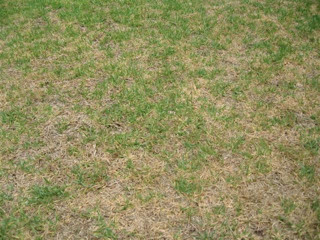
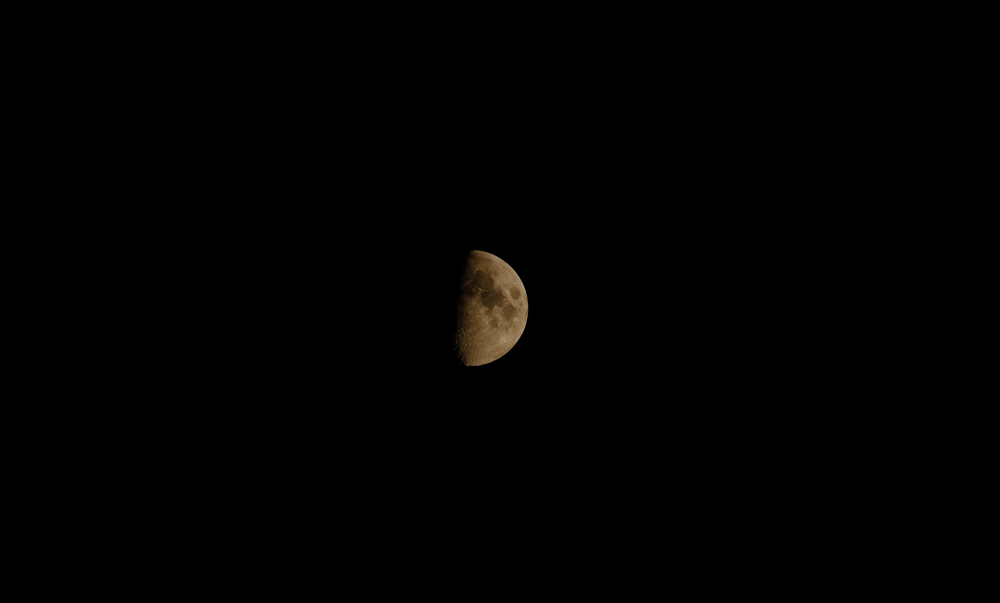

// init: function()
// {
// let video = document.querySelector("#video");
// let videoDisplay = document.querySelector("#video-display");
// let videoBorder = document.querySelector("#video-border");
// let videoMesh = videoDisplay.getObject3D("mesh");
// let borderMesh = videoBorder.getObject3D("mesh");
// videoBorder.addEventListener("mousedown", function(event)
// {
// if ( video.paused )
// {
// video.play();
// borderMesh.material.color.set("#004400");
// }
// else
// {
// video.pause();
// borderMesh.material.color.set("#440000");
// }
// });
// }
// });
// AFRAME.registerComponent('modify-materials', {
// init: function () {
// // Wait for model to load.
// this.el.addEventListener('model-loaded', () => {
// // Grab the mesh / scene.
// const obj = this.el.getObject3D('mesh');
// // Go over the submeshes and modify materials we want.
// obj.traverse(node => {
// if (node.name.indexOf('ship') !== -1) {
// node.material.color.set('red');
// }
// });
// });
// }
// });
// อาร์เรย์ของ URL วิดีโอ
const videoUrls = [
"video/กันตรึมสกา - ยิ่งยง ยอดบัวงาม.mp4",
"video/annVideo.mp4",
"video/sintel.mp4"
];
document.addEventListener('keydown', function (event) {
// ตรวจสอบว่าปุ่มที่ถูกกดคือ N หรือไม่
if (event.key === 'N' || event.key === 'n') {
// สุ่มเลือก URL วิดีโอ
const randomVideoUrl = getRandomVideoUrl();
// เปลี่ยนที่อยู่ของวิดีโอ
changeVideoSource(randomVideoUrl);
}
});
function getRandomVideoUrl() {
// สุ่มตำแหน่งของ URL วิดีโอจากอาร์เรย์
const randomIndex = Math.floor(Math.random() * videoUrls.length);
return videoUrls[randomIndex];
}
function changeVideoSource(videoUrl) {
// เปลี่ยนที่อยู่ของวิดีโอสำหรับทุกตัว
document.getElementById('video').src = videoUrl;
document.getElementById('video2').src = videoUrl;
document.getElementById('video3').src = videoUrl;
// เริ่มเล่นวิดีโอใหม่
document.getElementById('video').play();
document.getElementById('video2').play();
document.getElementById('video3').play();
}

